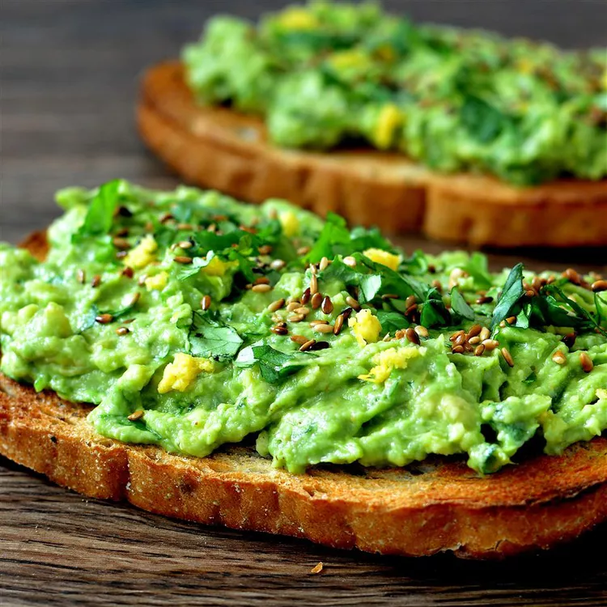

MEYER LEMON AVOCADO TOAST RECIPE

If you would like to return to the other recipes, click the link below.
Back to Home
Ingredients
- 2 slices whole grain bread
- 1/2 avocado
- 2 tablespoons chopped fresh cilantro, or more to toast
- 1/4 teaspoon granted Meyer lemon zest
- 1 teaspoon Meyer lemon juice, or to taste
- 1 pinch cayenne pepper
- 1 pinch fine sea salt
- 1/4 teaspoon chia seeds
Steps
- Toast bread slices to desired doneness, 3 to 5 minutes.
- Mash avocado in a medium bowl; stir in cilantro, Meyer lemon zest, Meyer lemon juice, cayenne pepper, and sea salt until well combined. Spread avocado mixture onto toast; top with chia seeds.